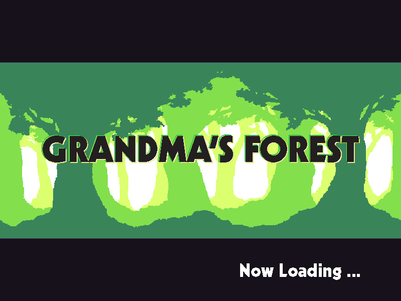

CST 205 : Multimedia Design and Programming
Introduces design, creation, and manipulation of interactive applications and electronic media for communication purpose. Focuses on creating media, understanding media concepts, and manipulating the created media using basic programming concepts of control flow, functions, expressions and data types in the Python language. Students acquire a basic understanding for digital media formats, how to design, create such media using basic programming skills.
Program Outcomes:

Source Code: Github